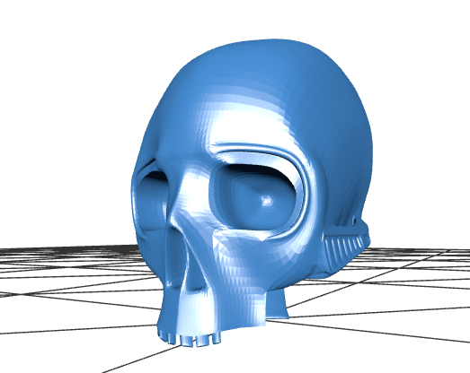
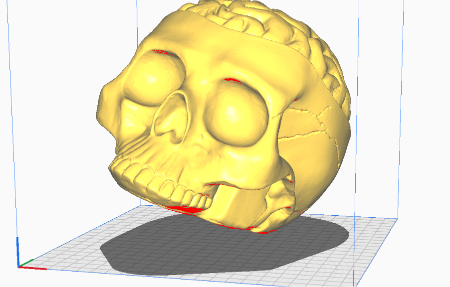
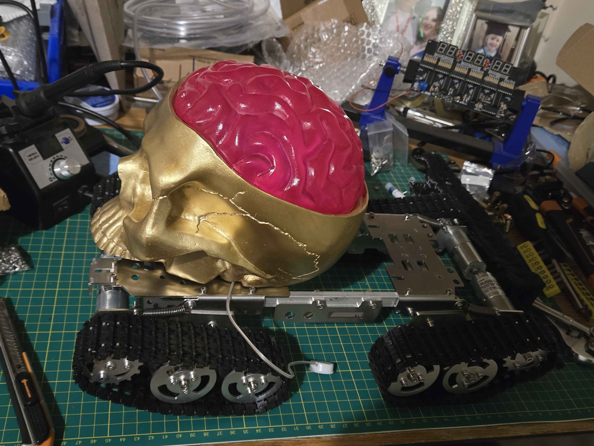
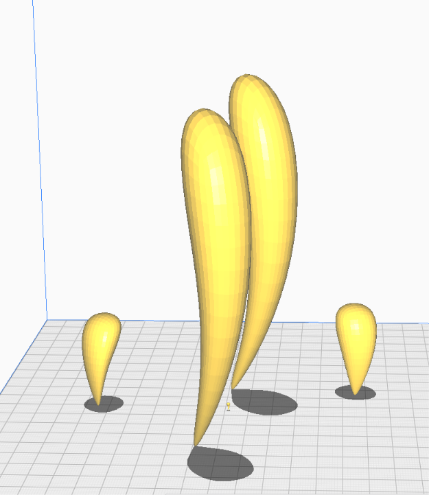
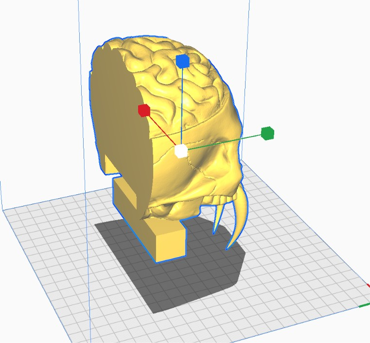
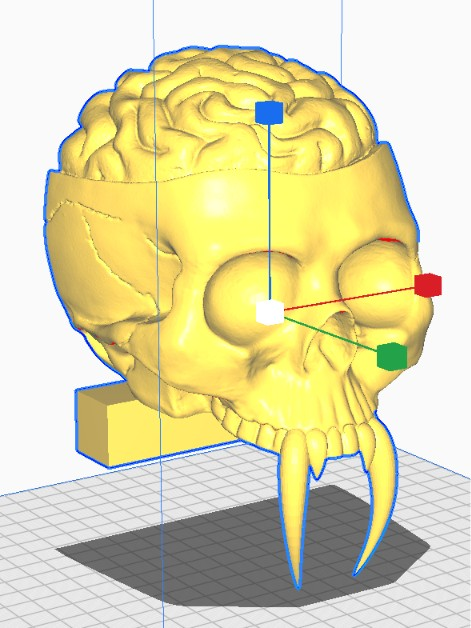

Planning - 19/01/2026
First skull attempt in blender - 02./03/2026

3D Scanned Model - 16/03/2026
 |
 |
Created fangs to go onto model - 17/03/2026

Skull cut and modified ready for next stages 24/03/2026 -
 |
 |
Skull was cut in half using boolean techniques, fangs added onto model, bottom base is rounded inwards to allow room for mechanism, jaw and inner jaw/ tongue.
Back of skull added and more alien aesthetics 28/03/2026 -
Skull was cut in half using boolean techniques, fangs added onto model, bottom base is rounded inwards to allow room for mechanism, jaw and inner jaw/ tongue.
Mechanism-12.05.2026
The proposed mechanism was designed around a push-based accuator system, in which the inner jaw and tongue assembly extended forwards while simultaneously causing the lower jaw to rotate downwards. This created two coordinated points of movement intended to enhance the animatronics effect and engagement. Once the tongue assembly reached its fully extended position, a peristaltic pump system would dispense liquid soap onto the users handsbefore pausing breifly and retracting the mechanism back to its original close position.